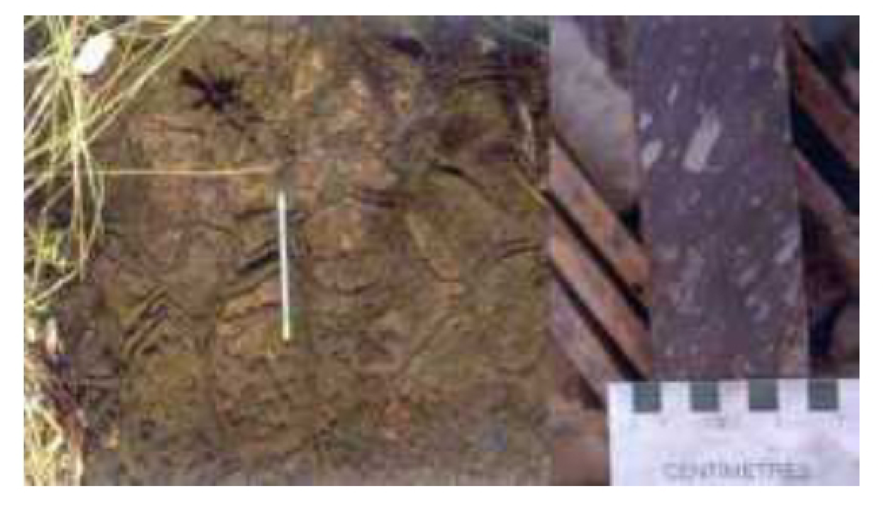

Meio Século de Exploração Mineral no Brasil - Parte 4

Resumo em Português
A quarta parte apresenta reflexão mais conceitual sobre a exploração mineral, defendendo que depósitos minerais só podem ser plenamente compreendidos quando inseridos em seu contexto geológico regional e tectônico. O autor critica abordagens excessivamente localizadas e a falta de integração entre dados geológicos e geodinâmicos, argumentando que a fertilidade mineral depende da compreensão da evolução crustal e dos processos tectônicos responsáveis pela formação dos depósitos. O texto revisita estudos realizados em Goiás e na Província Tocantins, abordando a importância dos corpos ultramáficos, dos ofiolitos e dos ambientes associados a antigos oceanos e colisões continentais. São destacados os trabalhos pioneiros de pesquisadores brasileiros e programas exploratórios conduzidos por empresas como Docegeo e Rio Tinto. A descoberta do depósito Chapada é apresentada como exemplo do sucesso obtido quando a exploração se baseia em interpretação geológica regional robusta. A mensagem central é que o conhecimento geotectônico constitui ferramenta indispensável para orientar a pesquisa mineral moderna e reduzir a dependência de métodos exclusivamente empíricos.